大阪でおすすめのLLMO会社10選｜費用相場と選び方もわかりやすく解説

大阪は、地域や業種によって必要なLLMO施策が変わりやすいエリアです。単に「LLMOに対応している会社」を探すだけではなく、自社の商圏や事業内容に合った提案ができる会社を選ぶことが重要になります。
本記事では、大阪でおすすめのLLMO会社を10社紹介したうえで、比較するときに見ておきたいポイントや費用相場、依頼前によくある疑問までわかりやすく整理します。大阪での会社選びに失敗したくない方や、まずは現実的な予算でLLMOを始めたい方は参考にしてください。
まずはLLMO対策の基本を押さえたい方は基礎記事から、低価格帯の考え方を見たい方は格安LLMO代行の比較記事もあわせて確認しておくと判断しやすくなります。現状把握から始めたい場合は無料LLMO診断の活用も有効です。
目次

大阪でおすすめのLLMO会社10選
まずは、大阪本社・大阪拠点・関西対応が確認でき、かつLLMOやAIO、AI検索最適化に関する公開情報がある会社を紹介します。順位付けではなく、比較検討しやすいように順不同で整理しています。
| 会社名 | 拠点性 | 向いている企業 | 支援範囲 | 費用感 |
|---|---|---|---|---|
| 株式会社AIMA | 大阪市北区 | まずは低コストでLLMOを試したい企業 | 質問設計、記事制作、引用チェック | 月額5万円〜 |
| 株式会社メディアリーチ | 大阪本社 | SEOとLLMOをあわせて強化したい企業 | LLMO診断、戦略設計、施策設計、運用支援 | 要問い合わせ |
| S＆Eパートナーズ株式会社 | 大阪市中央区本社 | SEOの延長線上でLLMOに取り組みたい企業 | SEO支援、LLMO・GEO支援、AI検索診断 | 要問い合わせ |
| 株式会社SEMラボラトリー | 大阪市西区本社 | 技術面も含めてAIOを整えたい企業 | SEO、AIO、MEO、サイト改善 | 要問い合わせ |
| CUBE | 大阪の制作会社 | ホームページ制作とLLMOをまとめて相談したい企業 | LLMO対策、AI対策、ホームページ制作、構造改善 | 要問い合わせ |
| 株式会社リースエンタープライズ | 大阪市北区拠点 | 制作・多言語対応も含めてAI検索対策をしたい企業 | ホームページ制作、SEO、AIO・LLMO対策、多言語対応 | 要問い合わせ |
| 株式会社PLAN-B | 大阪本社 | ブランド戦略やPRまで含めて取り組みたい企業 | LLMOコンサルティング、SEO、PR連携、戦略設計 | 要問い合わせ |
| 株式会社ジオコード | 大阪拠点あり | 実装や改善まで一社で進めたい企業 | SEO、コンテンツ制作、AIO・LLMO、UI/UX改善 | 要問い合わせ |
| 株式会社NEXT LEAP | 大阪市北区本社 | Web制作や動画も含めて相談したい企業 | LLMO対策、ホームページ制作、動画制作 | 要問い合わせ |
| 株式会社WeBridge | 大阪支社あり | 広告やSNSも含めて広く相談したい企業 | LLMO対策、SEO、広告運用、SNS運用、Web制作 | 要問い合わせ |
株式会社AIMA
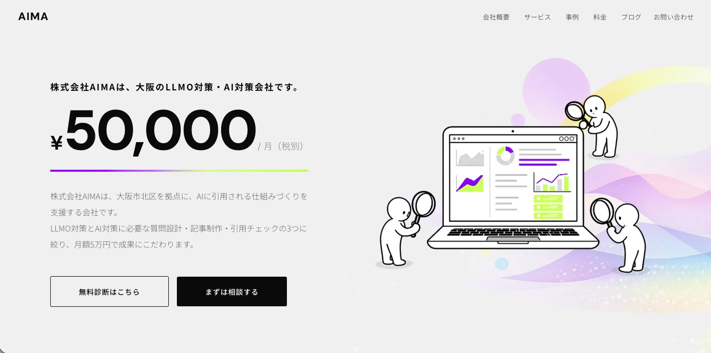
株式会社AIMAは、大阪市北区を拠点にLLMO対策とAI対策を支援している会社です。公開情報では、質問設計・記事制作・引用チェックの3つに絞った支援を打ち出しており、価格も月額5万円からと比較的わかりやすいのが特徴です。
特に、まずは小さく始めたい中小企業や、AI検索で自社名やサービス名が出てこない状態を改善したい企業に向いています。支援内容がシンプルなので、何をやってくれるのかを把握しやすい点も強みです。公開情報を補足したい方はサービスページや会社概要もあわせて見ると全体像を把握しやすいです。
株式会社メディアリーチ
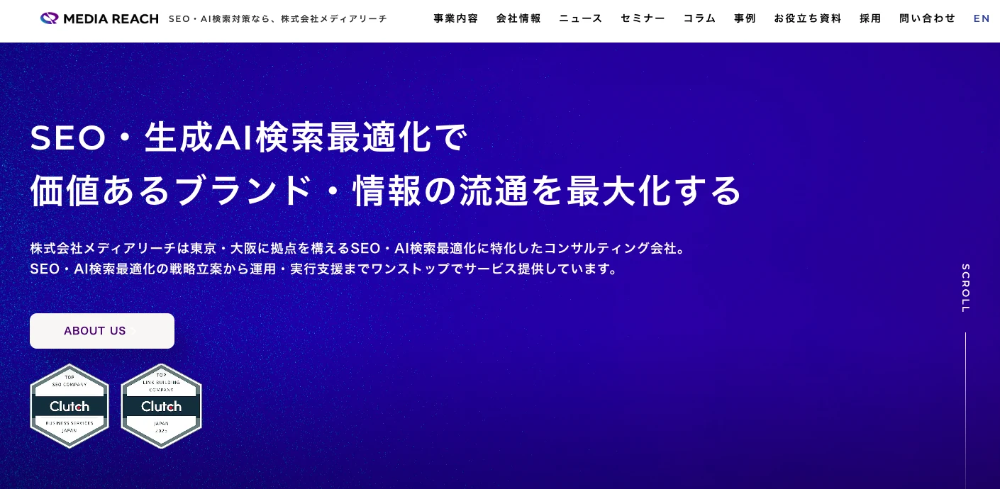
株式会社メディアリーチは、大阪本社を持つSEO・LLMO専門会社です。LLMOコンサルティングサービスを公開しており、サイト調査、コンテンツ調査、テクニカル調査を含めた支援を行っています。
大阪に拠点を置きつつ、国内外のSEOやLLMOにも対応しているため、すでに一定の集客基盤があり、より戦略的にAI検索対策を進めたい企業と相性がよいです。診断からコンサルティング、記事制作周辺まで広く相談しやすいタイプです。
参考：株式会社メディアリーチ｜大阪・東京のSEO・LLMO専門会社
参考：株式会社メディアリーチ｜LLMOコンサルティング（GEO/AIO）
S＆Eパートナーズ株式会社
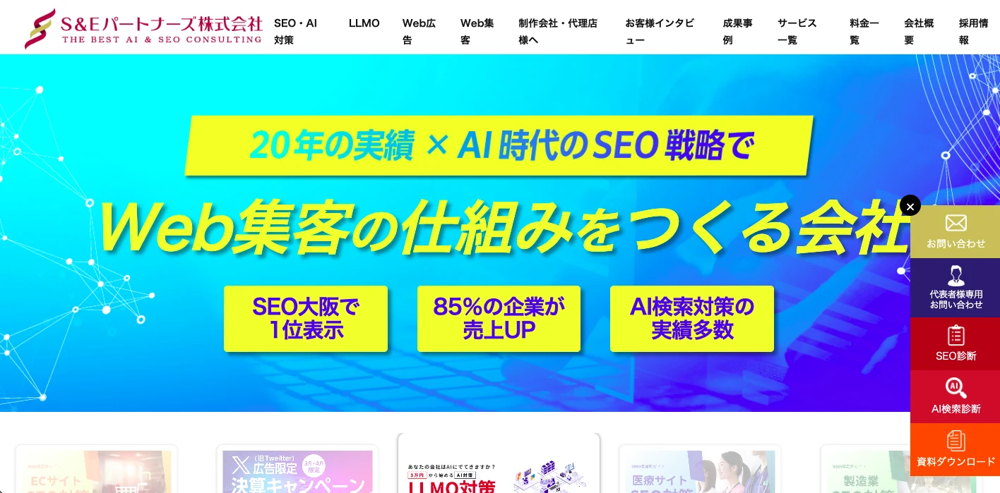
S＆Eパートナーズ株式会社は、大阪市中央区に本社を置くSEO会社で、従来のSEO対策にAI検索最適化（LLMO・GEO）を統合した支援を提供しています。AI検索診断レポートや、LLMOに特化した実行支援を打ち出している点が特徴です。
もともとSEOの支援実績を土台にしているため、LLMOだけを単独で考えるのではなく、検索全体の流れの中で改善したい企業に向いています。特に、地域名×業種や中小企業向けの集客を意識する大阪企業と相性がよさそうです。
参考：S＆Eパートナーズ株式会社｜LLMO対策（AI検索・GEO・AIO）
株式会社SEMラボラトリー
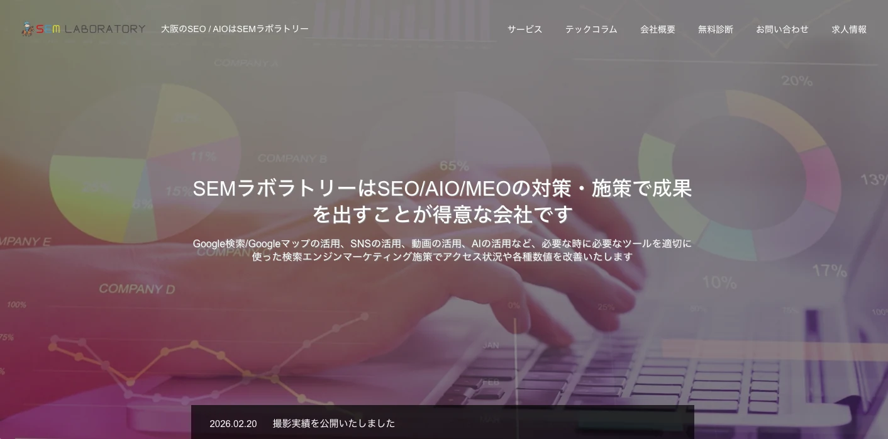
株式会社SEMラボラトリーは、大阪市西区北堀江に本社を置くSEO専門会社です。公式サイトではSEO・AIO・MEOに特化した会社として案内しており、AIOやllms.txtに関する情報発信も行っています。
コンテンツ面だけでなく、技術寄りの改善や検索基盤の整備を重視したい企業に向いています。大阪で、派手な提案よりも着実な改善を積み上げたい会社にとって比較候補になりやすいタイプです。
参考：株式会社SEMラボラトリー｜SEM LABORATORY | 大阪のSEO / AIOはSEMラボラトリー
CUBE
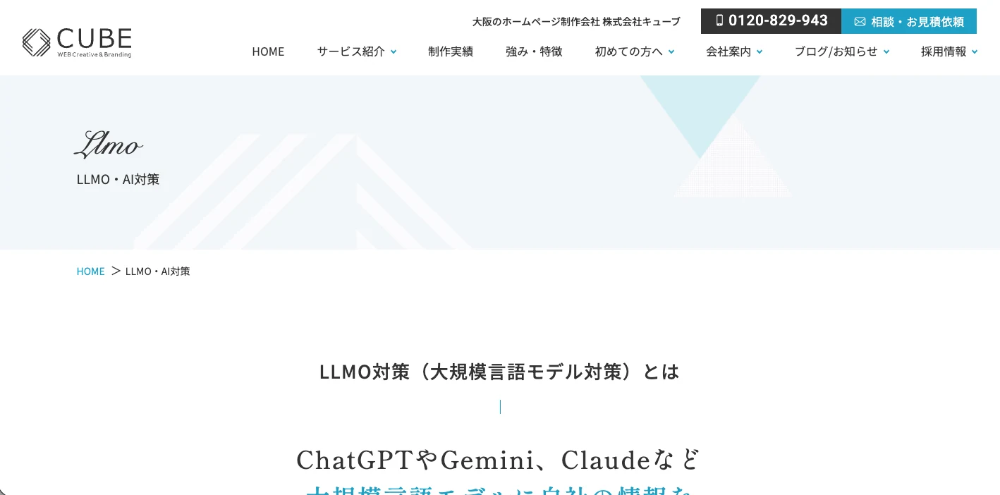
CUBEは、大阪のホームページ制作会社として、LLMO・AI対策やLLMO対応HP制作を案内しています。公式ページでは、FAQ整理や構造化データの更新など、AIが会社情報を理解しやすくするための整備を重視しているのが特徴です。
サイト制作やリニューアルとあわせてLLMOを進めたい企業に向いています。特に、既存サイトの見せ方や情報構造を見直したい大阪の中小企業にとっては相談しやすい候補です。
参考：CUBE｜LLMO・AI対策 - ホームページ制作は大阪CUBEへ
株式会社リースエンタープライズ
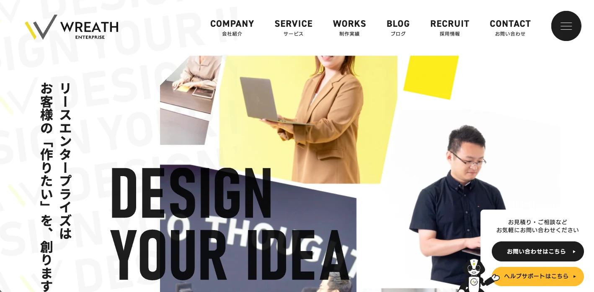
株式会社リースエンタープライズは、大阪市北区を拠点とするホームページ制作会社で、SEO対策とAI検索最適化（AIO・LLMO対策）を組み合わせた支援を打ち出しています。多言語・外国語ホームページ制作にも強みがある点が特徴です。
単なる記事制作ではなく、制作・設計・運用まで含めてAI検索対応のサイトを作りたい企業に向いています。海外向けページや多言語対応も視野に入る企業なら、比較候補として入れやすい会社です。
参考：株式会社リースエンタープライズ｜ホームページ制作・AIO対策 大阪
参考：株式会社リースエンタープライズ｜AIO・LLMO対策｜自社ホームページ実装
株式会社PLAN-B
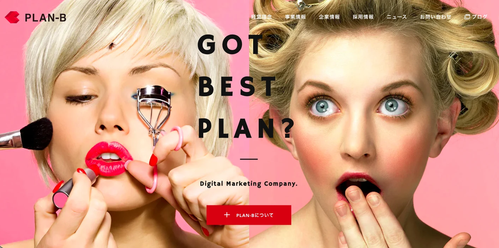
株式会社PLAN-Bは大阪本社を持つデジタルマーケティング会社で、公式にLLMOコンサルティングサービスを展開しています。AIに選ばれるためのブランド戦略としてLLMOを位置づけており、SEOやPRと組み合わせた支援も行っています。
中堅〜大手企業や、単発の施策ではなく中長期の戦略設計まで見据えたい企業に向いています。大阪本社の会社として知名度もあり、比較記事では外しにくい存在です。
参考：株式会社PLAN-B｜デジタルマーケティングカンパニー
参考：株式会社PLAN-B｜LLMOコンサルティングサービス
株式会社ジオコード
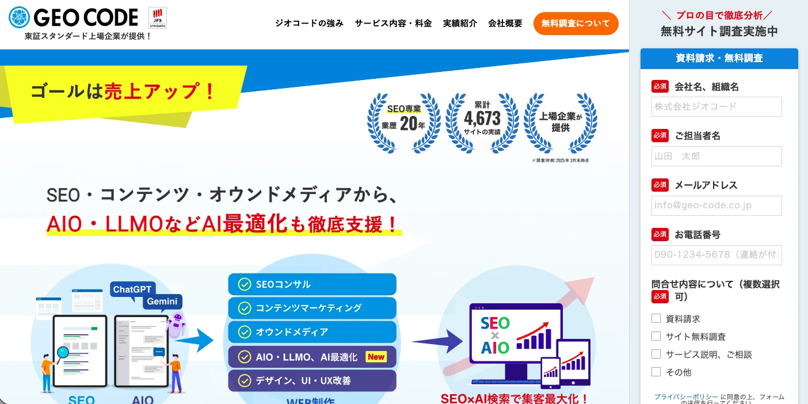
株式会社ジオコードは、SEO対策・コンテンツマーケティング・AIO・LLMOなどAI最適化まで支援している会社です。大阪にも拠点があり、サービスページではAIO・LLMOを明示しています。
SEOの実装や改善、コンテンツ制作、UI/UX改善まで含めて、一気通貫で依頼したい企業に向いています。大阪の拠点性に加えて、上場企業の安心感を重視する会社にも比較しやすい候補です。
参考：株式会社ジオコード｜SEO対策・AIO・LLMOなどAI最適化も徹底支援
株式会社NEXT LEAP
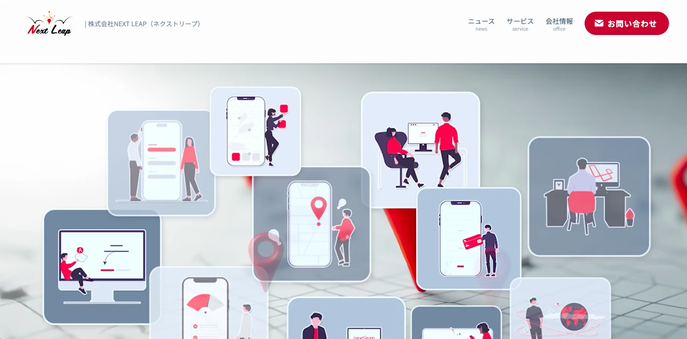
株式会社NEXT LEAPは、大阪市北区に本社を置き、LLMO対策（AI検索最適化）サービスを提供している会社です。公式ページでは、Webサイトを「AI時代の営業マン」にするという訴求で、AIが読み取りやすい構造への整備を案内しています。
AI検索向けのサイト整備だけでなく、ホームページ制作や動画制作などもあわせて相談したい企業に向いています。大阪の中小企業が、比較的相談しやすい距離感で依頼できる候補です。
参考：株式会社NEXT LEAP｜LLMO対策（AI検索最適化）サービス
株式会社WeBridge
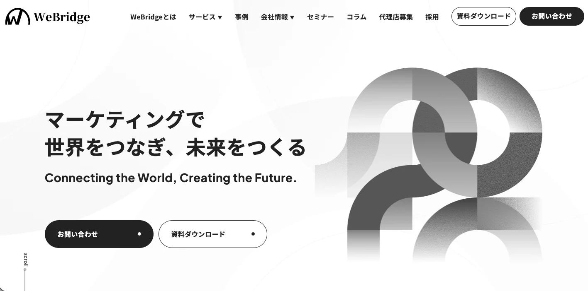
株式会社WeBridgeは東京本社の会社ですが、大阪支社を持ち、公式サイトでLLMO対策（AI対策）をサービスとして案内しています。サービス一覧でも、SEOや広告運用、SNS運用と並んでLLMO対策を提供していることが確認できます。
LLMO単体ではなく、広告やSNS、LINE運用なども含めて広くマーケティング支援を受けたい企業に向いています。大阪支社があるため、関西企業にとっても比較対象に入れやすいです。
大阪のLLMO会社を比較する際のポイント
大阪でLLMO会社を比較するときは、全国共通の基準だけで決めないほうがよいです。大阪府は中小企業が非常に多く、大阪市に事業所が集まる一方で、東大阪では製造業の比重が高いなど、地域によって強い業種がかなり違います。
そのため、大阪で会社を選ぶなら、単に「LLMOに対応しているか」ではなく、自社がいる商圏や業種に合わせて設計・制作できるかを見ることが重要です。全国系の比較としてLLMO対策会社の比較記事もあわせて確認してみてください。
大阪市内型の集客に強いか
大阪市地域には、府内民営事業所の46.1％に当たる177,184事業所が集まっています。しかも大阪市地域は、卸売業・小売業や宿泊業・飲食サービス業の集積が大きく、地域別経済計算でも卸売・小売業の構成比が20.8％、専門・科学技術、業務支援サービス業の構成比が14.8％と高くなっています。
このため、大阪市内の企業がLLMO会社を選ぶときは、一般的な全国向け記事を作るだけでは不十分です。「大阪×業種名」「梅田・難波・本町などの商圏名」まで落とし込める会社かどうかを見たほうがよいです。特に、BtoBサービス、店舗集客、士業、クリニック、スクールなどは、大阪市内の競争環境を踏まえた設計力が重要です。
東大阪・八尾など製造業商圏を理解しているか
大阪では、東大阪地域のように製造業の存在感が強いエリアがあります。大阪府の地域別経済計算では、中河内地域は製造業の特化係数が1.77とされており、製造業への偏りが確認できます。
このような商圏では、飲食店や美容系のようなBtoC型のLLMO設計だけでは噛み合いません。比較すべきなのは、技術情報、対応領域、加工内容、導入事例、材質、設備、法人向けの相談導線など、製造業特有の情報発信に落とし込める会社かどうかです。
医療・福祉のように府内に広く点在する業種に対応できるか
大阪府全体では、民営事業所の従業者数で見ると、卸売業・小売業が21.4％で最も多く、その次に医療・福祉が14.3％、製造業が13.1％となっています。さらに、医療・福祉の事業所や従業者は大阪市だけに集中しているのではなく、府内各地に広く分布しています。
このため、医療・福祉、介護、保育、福祉施設紹介などの領域では、大阪市内だけを前提にした設計では足りません。北摂、東大阪、南河内、泉州まで含めた商圏の広がりを踏まえながら、地域名を含む質問や信頼性を重視した情報設計を作れる会社かどうかを見るべきです。
大阪の中小企業でも続けやすい支援体制か
大阪府は企業数ベースで見ると中小企業が99.6％を占めており、小規模企業の比率も高い地域です。一方で、IPAの調査では、日本の従業員100人以下の企業では、生成AIについて「関心はあるが予定はない」「今後も取り組む予定はない」の合計が8割近くにのぼるとされています。
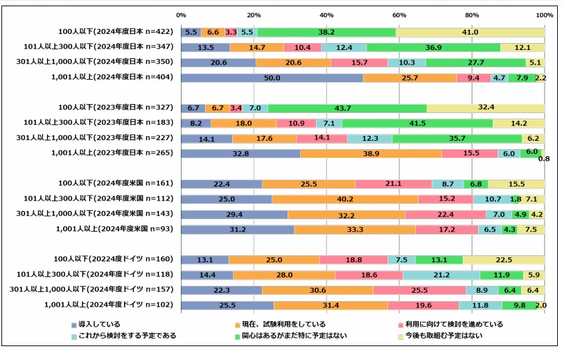
つまり、大阪でLLMO会社を選ぶときは、理想論だけを語る高額コンサル型よりも、中小企業でも実行しやすい支援体制かを見たほうが現実的です。たとえば、質問設計から記事制作までどこまで任せられるか、社内に専門人材がいなくても回るか、小さく始めて改善できるか、といった点は大阪の企業にとってかなり重要な比較軸です。
開業率が高い大阪で「比較される前提」の施策を組めるか
大阪府内の年平均事業所開業率を見ると、2016年から2021年の非一次産業全体では、大阪市地域が5.7％、北大阪地域が4.9％、東大阪地域が4.7％、泉州地域が5.1％となっています。大阪はもともと商売の街として競争が活発で、新しい事業者も継続的に出てくる地域です。
そのため、大阪のLLMO会社を比較するときは、すでに比較されているキーワードだけを追う会社よりも、比較される前の質問を見つけて先回りできる会社のほうが向いています。新規参入や競合増加が起こりやすい大阪では、レポート提出だけで終わる支援よりも、テーマ選定、記事制作、改善まで素早く回せる会社のほうが相性がよいです。
大阪の現場感に合わせて制作まで落とせるか
大阪でLLMO会社を選ぶときは、最終的に「戦略の話だけで終わらないか」も確認したいところです。大阪は卸売・小売、飲食、製造、医療・福祉など業種の幅が広く、必要なコンテンツの種類もかなり変わります。
だからこそ、比較するときは提案資料の見栄えよりも、自社の商圏に合わせた質問設計ができるか、その内容を記事やページ改善にまで落とせるか、公開後にAIでの出現や引用を見ながら改善できるかを見るべきです。大阪の会社選びでは、地域特性を理解したうえで実装まで進められるかどうかが特に重要です。
大阪のLLMO会社に依頼する費用相場
大阪でLLMO会社に依頼する場合、費用は一律ではありません。実際には、現状把握だけを行う診断型、月1回の助言が中心のアドバイス型、戦略設計から施策反映まで入る伴走型、さらに記事制作込みの運用型で金額がかなり変わります。
しかも大阪は中小企業の比率が高く、まずは小さく試したい企業も多いため、単純な相場の平均よりも「その金額で何をしてもらえるか」を確認することが大切です。価格帯別の考え方は格安LLMO代行の比較記事も参考になります。
大阪では「診断だけ依頼する」なら1万円〜3万円台から見つかる
大阪の会社では、まず現状把握だけを行う診断プランを低価格で用意しているケースがあります。たとえばS＆Eパートナーズでは、AI検索診断レポートを1万円、SEO・AI検索診断を3万円で案内しています。
この価格帯は、いきなり本格契約をするのが不安な大阪の中小企業にとっては入りやすいです。特に、まずは自社がAIにどう見られているのかを把握したい会社や、社内説明の材料を作りたい会社に向いています。ただし、この価格帯はあくまで現状分析が中心で、記事制作や改善実装まで入らないことが多いです。
参考：S＆Eパートナーズ株式会社｜LLMO対策（AI検索・GEO・AIO）
月額5万円前後は「格安帯」だが、大阪では試しやすい価格でもある
大阪では、中小企業や小規模事業者が多いこともあり、まずは小さく始めたいニーズが強いです。実際にAIMAでは、質問設計・記事制作・引用チェックの3つに絞ったLLMO支援を月額5万円で案内しています。
この価格帯は、一般的なLLMOコンサルの中心価格よりかなり低い水準ですが、大阪の企業にとっては試しやすい金額です。特に、まだAI検索経由の問い合わせがどれだけ増えるかわからない段階では、最初から高額プランを組むより、低価格で回しながら見極めたい会社も多いはずです。
大阪の伴走型支援は月額15万円〜20万円前後がひとつの目安
大阪のSEO会社やLLMO対応会社を見ると、戦略設計から施策立案、必要に応じたサイト反映まで入る伴走型支援は、月額15万円〜20万円前後がひとつの目安になります。たとえばS＆Eパートナーズでは、SEO・AI検索コンサルプランが月額15万円から、記事付きプランが月額17万円からとなっています。
この価格帯になると、単なる助言ではなく、継続的に改善を進める前提の支援になります。大阪市内の競争が激しい業種や、東大阪の製造業のように専門情報の整理が必要な業種では、診断だけで終わらず、このくらいの価格帯から本格的な取り組みになると考えたほうが現実的です。
参考：S＆Eパートナーズ株式会社｜LLMO対策（AI検索・GEO・AIO）
戦略設計や大規模支援まで入ると20万円〜100万円以上になることもある
大阪のLLMO関連記事やコンサル比較情報では、LLMO診断が20万円〜100万円、月額コンサルティングが20万円〜100万円と整理されている例もあります。この価格帯は、対象キーワードや検索プロンプトの数が多い場合や、複数事業・複数サイトを横断して支援する場合、社内外の関係者が多く戦略整理に工数がかかる場合に想定しやすいです。
大阪でも、複数拠点を持つ企業や、広報・SEO・営業をまたいでAI検索対策を進める会社では、このレンジに入ることがあります。特に、レポート提出だけでなく、戦略策定、テーマ選定、制作管理、改善運用まで一気通貫で依頼する場合は、費用が上がりやすいです。
大阪で費用を見るときは「商圏に合う内容か」を必ず確認する
大阪でLLMO会社の費用を見るときに重要なのは、単純な安さではありません。大阪市内の店舗型ビジネスと、東大阪の製造業、府内全域を商圏に持つ医療・福祉では、必要な情報設計もコンテンツもまったく違います。
そのため、同じ月額10万円でも、商圏や業種に合わない施策なら成果にはつながりにくいです。逆に、費用が安くても、自社の商圏に合わせた質問設計と制作まで含まれていれば、十分に価値が出る場合があります。大阪では企業数が多く競争も激しいため、「安いか高いか」ではなく「大阪の自社商圏に合う支援か」で判断したほうが失敗しにくいです。
大阪のLLMO費用は「小さく始める会社」と「本格投資する会社」で分かれやすい
大阪の企業は、中小企業比率の高さもあって、まずは低価格でテストしたい会社と、最初からしっかり投資して差別化したい会社に分かれやすいです。前者なら診断型や月額5万円前後の小規模支援、後者なら月額15万円以上の伴走型や、20万円以上の戦略支援が比較対象になります。
つまり、大阪のLLMO会社の費用相場は、「いくらが相場か」だけで決めるより、自社がどの段階にいるのかを前提に見たほうがわかりやすいです。まずは現状把握が必要な会社、低予算で試したい会社、競争の激しい市場で早めに優位を取りたい会社では、選ぶべき価格帯が変わります。迷う場合は、無料LLMO診断のような小さい入口から優先順位を整理する進め方も有効です。
大阪のLLMO会社に関するよくある質問
ここでは、大阪でどの業種でも効果があるのか、SEO会社との違いは何かなど、依頼前に確認しておきたいポイントをわかりやすく整理しました。
大阪のLLMO会社に依頼する意味はありますか？
はい、あります。特に大阪は、大阪市内に事業所が集まる商圏と、東大阪のような製造業集積地、さらに府内各地に広がる医療・福祉系の商圏が混在しているため、地域性を踏まえた設計が重要です。
全国対応の会社でも支援は受けられますが、「大阪のどのエリアで、どの業種に向けて見つかれたいのか」まで落として考えるなら、大阪の商圏感覚を理解している会社のほうが話は早いです。
大阪本社のLLMO会社でないと意味はありませんか？
いいえ、大阪本社であることが絶対条件ではありません。大切なのは、本社所在地よりも、大阪の商圏や業種の違いを理解したうえで提案できるかどうかです。
たとえば、大阪市内の店舗集客、北摂エリアの教育・医療系、東大阪の製造業では、狙うべき質問や情報設計がかなり変わります。大阪拠点がある会社や、関西圏の支援実績がある会社であれば、比較対象として十分に検討できます。
大阪の中小企業でもLLMOに取り組む意味はありますか？
あります。むしろ、大阪は中小企業の比率が高いため、まだAI検索対策に本格的に取り組めていない会社も多いと考えられます。その分、早めに着手することで先行しやすい面があります。
特に、営業人員を増やしにくい会社や、広告費を大きくかけにくい会社にとっては、AI検索で比較検討の前段階に入れる状態を作ることに意味があります。最初から大きな予算をかけるのではなく、小さく始めて反応を見ながら広げる方法も取りやすいです。
大阪の製造業や店舗型ビジネスでもLLMOは効果がありますか？
はい、業種によって打ち手は変わりますが、十分に効果は期待できます。たとえば製造業なら、加工内容、対応素材、技術情報、導入事例、設備情報などが重要になります。店舗型ビジネスなら、地域名、比較軸、選ばれる理由、利用シーンなどが重要です。
つまり、LLMOはどの業種でも同じことをすればよいわけではありません。大阪では業種の幅が広いため、自社の業種や商圏に合わせて質問設計やコンテンツ設計を変えられる会社を選ぶことが大切です。
SEO会社とLLMO会社は何が違いますか？
SEO会社は、主にGoogleなどの検索エンジンで上位表示を目指す支援を行います。一方、LLMO会社は、ChatGPTやGemini、AI OverviewなどのAI回答内で、自社情報が引用・参照されやすくなる状態を目指して支援します。
ただし、実務上は完全に別物というわけではありません。実際には、SEOの土台があったうえで、AIに理解されやすい構造や質問単位の情報設計を強化していくケースが多いです。そのため、大阪で会社を選ぶときも、LLMOだけを単独で見るより、SEOやコンテンツ運用の基礎があるかどうかをあわせて見たほうが安心です。
大阪のLLMO会社に依頼したら、どれくらいで成果が出ますか？
テーマや競合状況によって変わりますが、すぐに大きな変化が出るとは限りません。まずは、自社がAIにどう認識されているかを把握し、必要なテーマを整理し、コンテンツやページを整えていく流れになります。
そのため、短期で判断しすぎるより、数か月単位で出現状況や引用状況を見ながら改善していく前提で考えたほうが現実的です。特に大阪のように競争が活発な地域では、単発施策よりも継続的な改善のほうが重要になりやすいです。
大阪のLLMO会社を選ぶときは何を確認すればよいですか？
まず確認したいのは、自社の商圏や業種に合わせた提案ができているかどうかです。大阪市内の店舗集客なのか、東大阪の製造業なのか、府内全域を対象にした医療・福祉なのかによって、取るべき質問は変わります。
そのうえで、どこまで対応してくれるのかも確認したいところです。診断だけなのか、戦略設計までなのか、記事制作や改善運用まで含むのかによって、費用の見え方も変わります。大阪で失敗しにくいのは、一般論ではなく、自社の地域性に合わせた提案をしてくれる会社です。
まとめ
大阪でLLMO会社を選ぶときは、単に「LLMOに対応している会社」を探すだけでは不十分です。大阪市内のように事業所が集中するエリア、東大阪のように製造業が厚いエリア、府内各地に広がる医療・福祉系の商圏では、狙うべき質問やコンテンツの設計が変わります。
そのため、大阪のLLMO会社を比較するときは、価格や知名度だけでなく、自社の商圏や業種に合わせて提案できるか、制作や改善まで対応できるかを確認することが大切です。
大阪は中小企業が多く、競争も活発な地域です。だからこそ、早い段階でAI検索への対応を始めることで、比較検討の前段階から見つけてもらいやすくなる可能性があります。まずは自社が「大阪のどの市場で、どの質問で見つかれたいのか」を明確にし、その課題に合う支援範囲を持つ会社から比較を始めることが重要です。